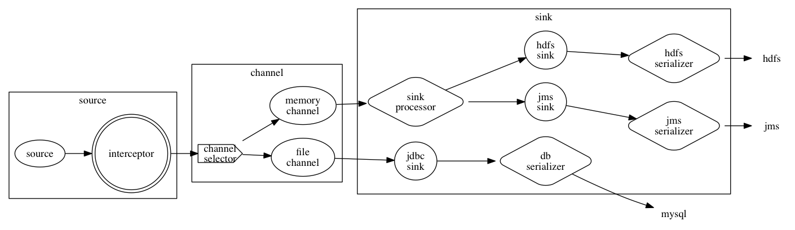

架构

概念
source
数据的生成源。比如：读取一个本地文件，MQ等等。一个数据单元被封装成一个event。
event
数据单元，从source产生，直到被序列化到存储中。event包含header，body两个部分：
- header: 一个map数据，可以被interceptor引用
- body: 一个字节序列，具体日志数据
interceptor
source读取一个event在放到channel中之前，event可以被添加数据。比如说：采集机器的主机名称，时间戳。
channel
数据队列，高可用的保障。source产生的数据先放到这里，sink接着从这里取出来放到存储当中。
channel selector
两个作用：
- 复制：把一个event写到一个或者多个channel中
- 路由：根据event中的某个属性值，把数据写到指定的channel中
sink
负责把channel中的数据写入目标存储。
sink processor
选择sink，在这里可以完成负载均衡和容错处理。
event serializer
把event中的数据，转换成存储需要的格式。